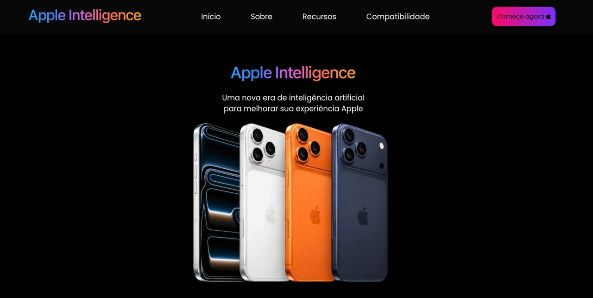
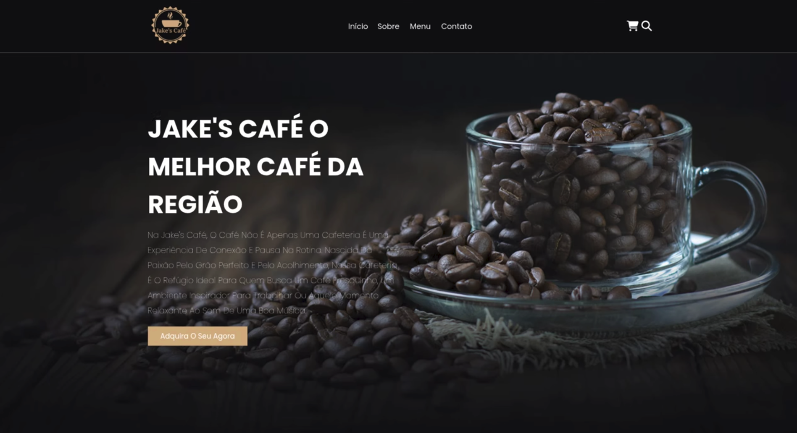
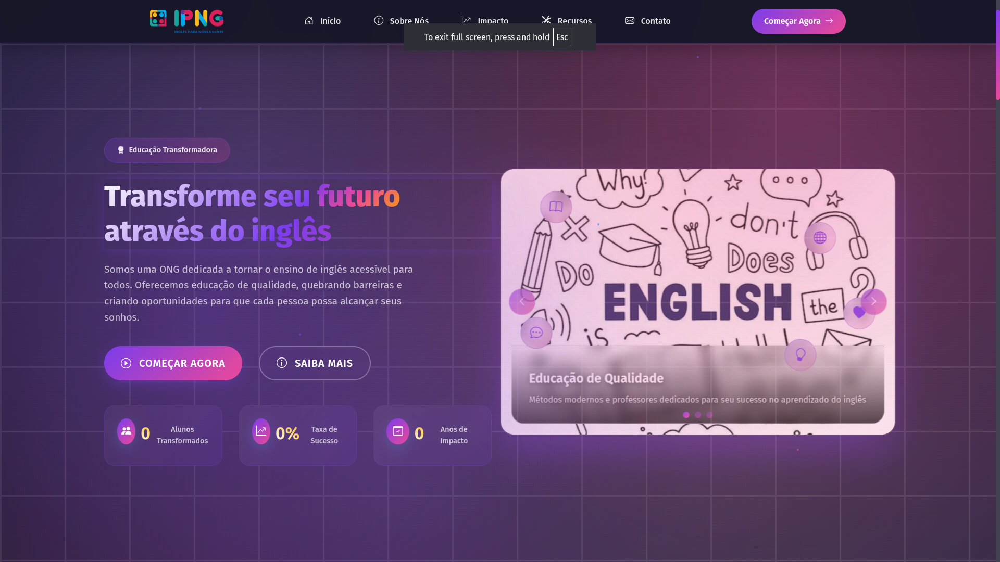
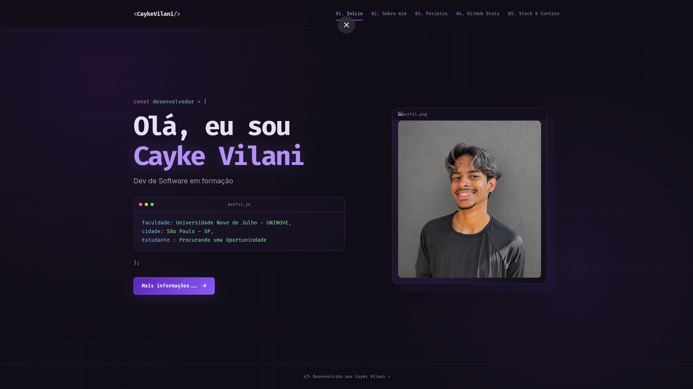
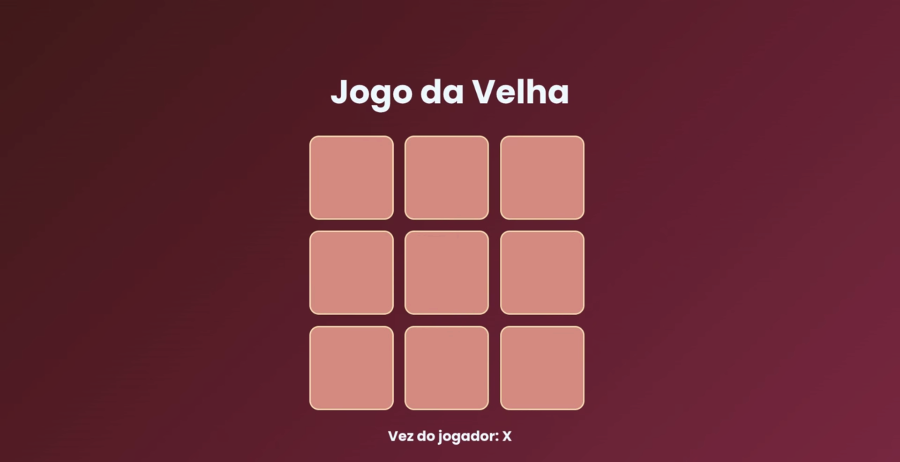
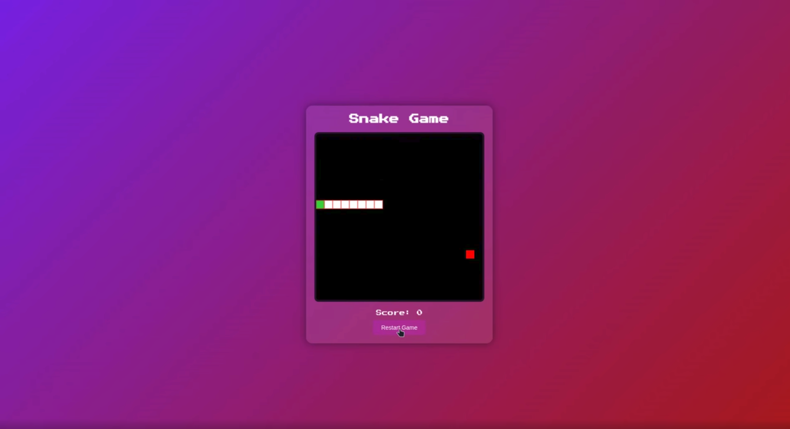

Concluído
Apple intelligence
Landing page inspirada no visual premium da Apple, desenvolvida em HTML e CSS com foco em estética moderna, organização de conteúdo e apresentação elegante da marca.
HTMLCSS

Landing page inspirada no visual premium da Apple, desenvolvida em HTML e CSS com foco em estética moderna, organização de conteúdo e apresentação elegante da marca.

Landing page para um café com visual acolhedor, destaque para menu, identidade da marca e uma estrutura moderna em HTML e CSS para apresentação do negócio.

Landing page voltada para o ensino de inglês, desenvolvida em HTML, CSS e JavaScript com foco em divulgação, organização das informações e experiência visual amigável para o público.

Portfólio pessoal desenvolvido em HTML, CSS e JavaScript, com design inspirado em ambientes de desenvolvimento como VS Code. O projeto apresenta informações profissionais, formação, tecnologias, projetos, estatísticas do GitHub e canais de contato em uma interface moderna e responsiva.

Jogo da velha desenvolvido em CSS, HTML e JavaScript com lógica clássica de tabuleiro, alternância de jogadas e objetivo de alinhar três símbolos antes do oponente.

Versão web do clássico jogo da cobrinha, desenvolvida em HTML, CSS e JavaScript com foco em mecânica simples, controles responsivos e diversão em navegador.